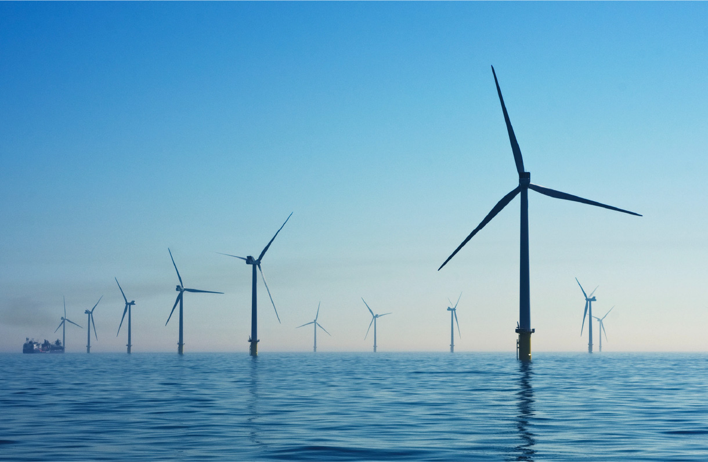
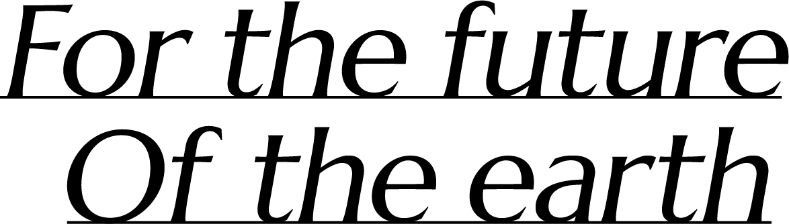
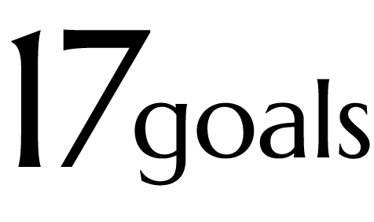
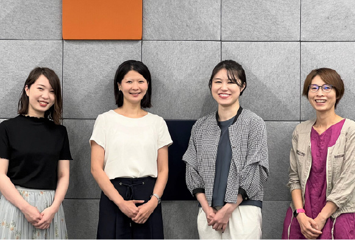
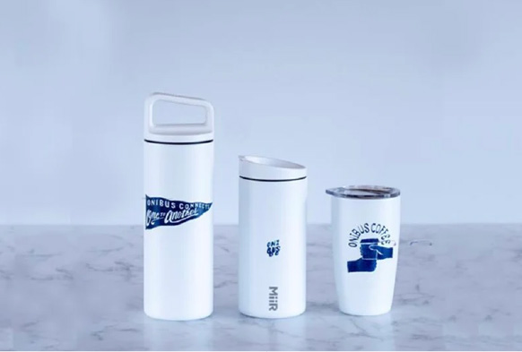
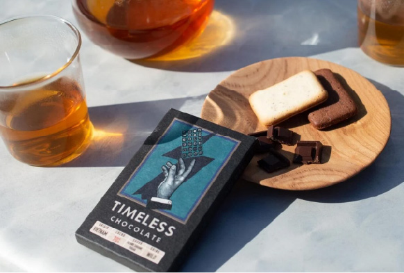
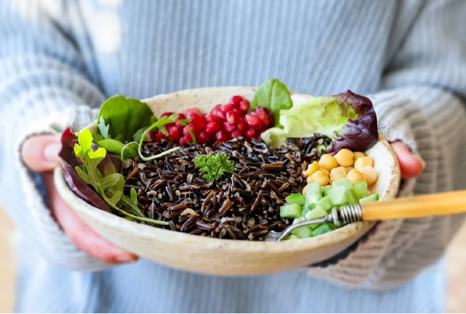

本文が入ります。この文章はダミーです。文字の大きさ、量、字間、行間等を確認するために入れています。この文章はダミーです。文字の大きさ、量、字間、行間等を確認するために入れています。この文章はダ


地球のミライのために、今できること。

SDGs 17の目標
インタビュー
SDGsに対する企業や自治体、学校の取り組みをご紹介します。
 インタビュー
インタビュー インタビュー
インタビュー
インタビュー今すぐできるSDGs
個人レベルで行える身近なSDGsをご紹介します。



SDGsとは？
数字から見る環境問題
循環型社会の実現
現在、私たちが暮らす地球は様々な危機に直面しています。このままでは私たちの居場所は豊かな環境を失ってしまいます。だから私たちは、未来の地球はどうあるべきか、今どう動くべきかを考えて、行動を起こす必要があります。
地球を救う方法の一つはリサイクルの実践・循環型社会の実現です。そこで当サイトは、地球課題を解決するための目標『SDGs』に関する情報を集め、目標達成のアイデアや取り組みを共有し、循環させたいと考えました。
EARTH NOTE（アースノート）はSDGs達成に取り組む企業インタビューや基礎知識をお伝えし、私たちにできることを紹介するWebメディアです。気になる記事があったら、まずはクリックしてください。企業や学校、家庭、個人でできることは異なります。一人ひとりがそれぞれの場所で、できることから始めましょう。
いいなと思った取り組みは、ぜひ隣にいる人に伝えてください。身近なアイデアを循環させて、地球の未来をつなげていきましょう。皆さんと一緒に取り組んでいけたら幸いです。
Towards a Sustainable Future Towards a Sustainable Future Towards a Sustainable Future Towards a Sustainable Future Towards a Sustainable Future